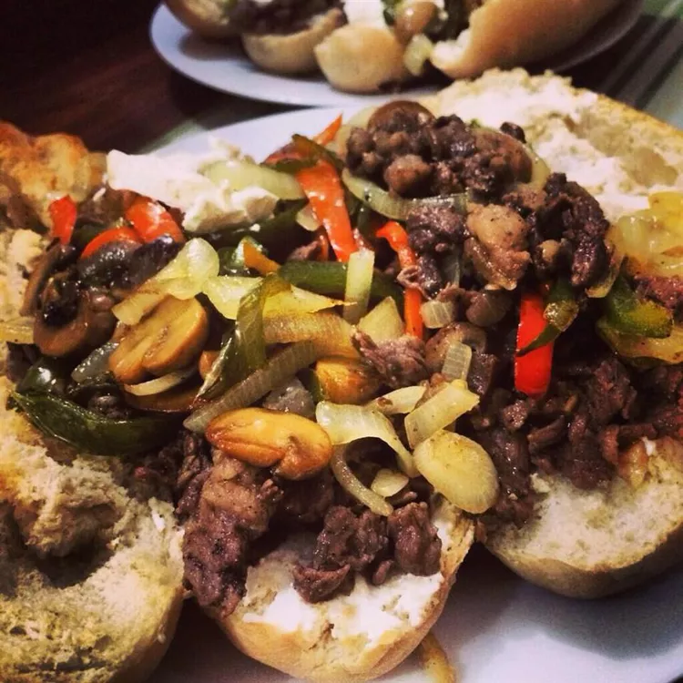

Philly Steak Sandwich

Description:
These Philly cheesesteak sandwiches are made with a delicious seasoning of herbs and spices. I purchase steak that has been sliced for making stir-fry, which takes a little less time, but achieves the same results.
Ingredients:
- Salt: 1/2 teaspoon salt
- Black Pepper: 1/2 teaspoon black pepper
- Paprika: 1/2 teaspoon paprika
- Chili Powder: 1/2 teaspoon chili powder
- Onion Powder: 1/2 teaspoon onion powder
- Garlic Powder: 1/2 teaspoon garlic powder
- Thyme: 1/2 teaspoon dried thyme
- Dried Marjoram: 1/2 teaspoon dried marjoram
- Dried Basil: 1/2 teaspoon dried basil
- Beef Sirloin: 1 pound beef sirloin, cut into thin 2 inch strips
- Vegetable Oil: 3 tablespoons vegetable oil
- Onion: 1 onion, sliced
- Green Bell Pepper: 1 green bell pepper, julienned
- Swiss Cheese: 3 ounces Swiss cheese, thinly sliced
- Hoagie Rolls: 4 hoagie rolls, split lengthwise
Steps:
- Mix together salt, pepper, paprika, chili powder, onion powder, garlic powder, thyme, marjoram, and basil in a small bowl.
- Place beef in a large bowl. Sprinkle seasoning mixture over top and stir to coat.
- Heat 1/2 of the oil in a skillet over medium-high heat. Add beef and saute to the desired doneness. Remove to a plate.
- Heat the remaining oil in the skillet. Add onion and green pepper and saute until tender.
- Preheat the oven on the broiler setting.
- Divide cooked beef between the bottoms of 4 rolls. Layer with onion and green pepper, then top with sliced cheese. Place on a cookie sheet.
- Broil in the preheated oven until cheese is melted.
- Cover with tops of rolls and serve.